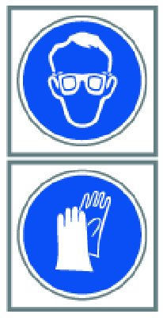

Safety Instructions for Handling Refrigerant R 134a
64 50 ... - Safety instructions for handling refrigerant R 134a

Warning!
Risk of injury!
Refrigerant circuit is under high pressure! Work on the refrigerant circuit may only be carried out by experts!
Draw off refrigerant without fail BEFORE all repair work on the refrigerant circuit.
The refrigerant circuit is depressurized AFTER drawing off!
It is absolutely essential to read and observe the relevant operating instructions for the A/C service unit used!

Protective measures/rules of conduct:
- Wear protective goggles
- Wear oil-resistant protective gloves
- Do not smoke!
- Observe country-specific safety regulations.
First aid measures:
- Eye contact:In the event of contact with the eyes, rinse immediately with plenty of running water and consult an opthalmologist.
- Skin contact: In the event of contact with skin, remove affected clothing immediately and rinse with plenty of water.
- After inhalation: If refrigerant vapors are inhaled in greater concentrations, remove the person affected to an area of fresh air and keep them under supervision. Consult a doctor. If breathing problems are experienced, breathe additional oxygen. If the person affected is breathing with difficulty or has stopped breathing, incline the person's head at the neck and administer the kiss of life.